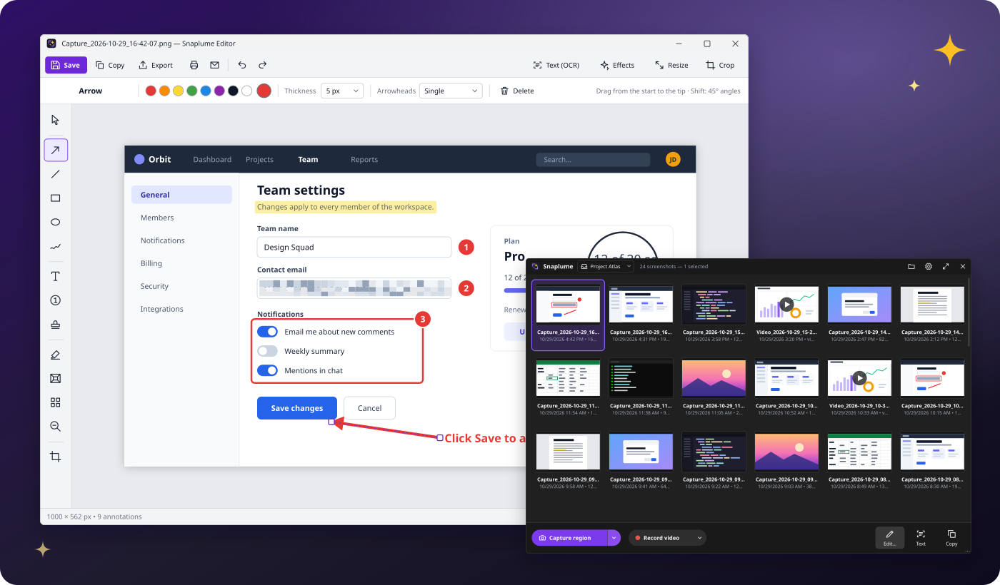
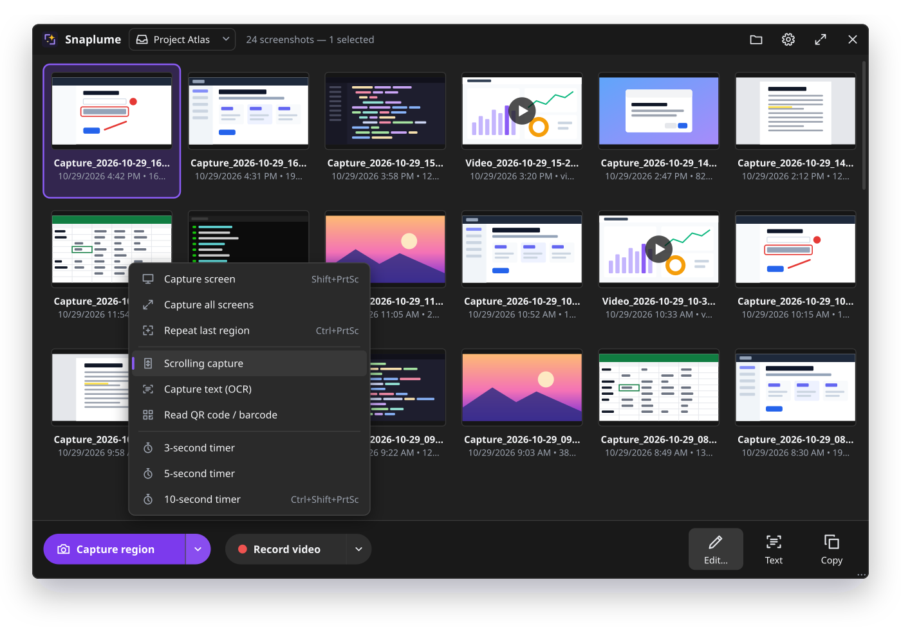
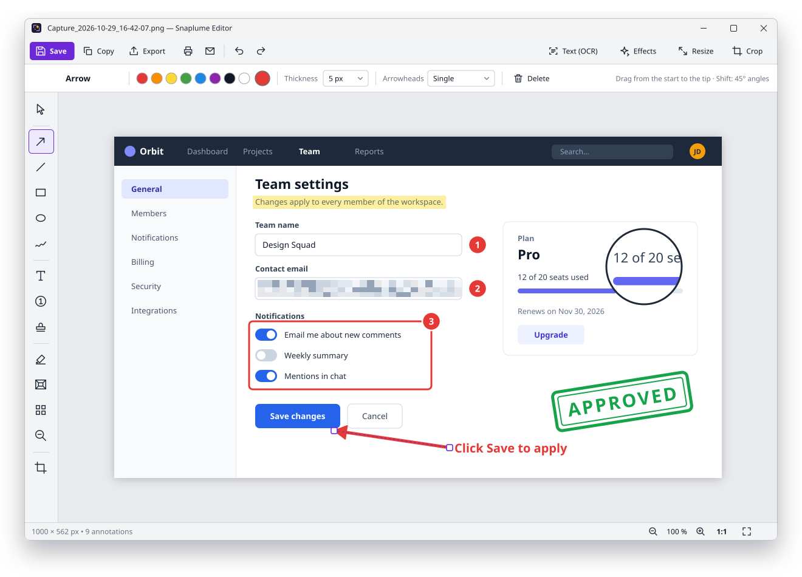
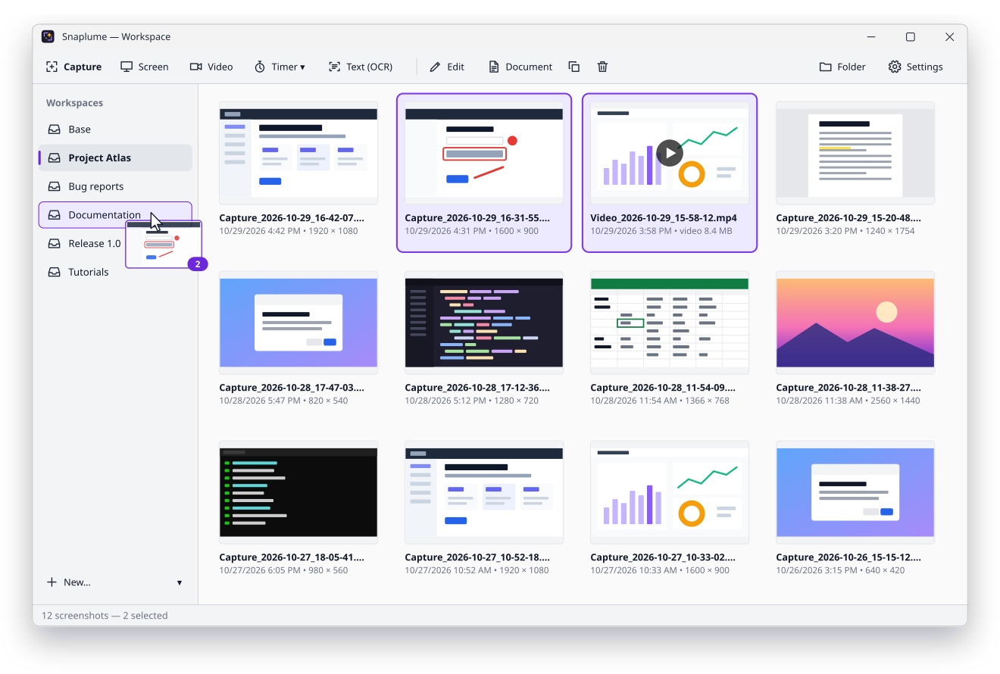
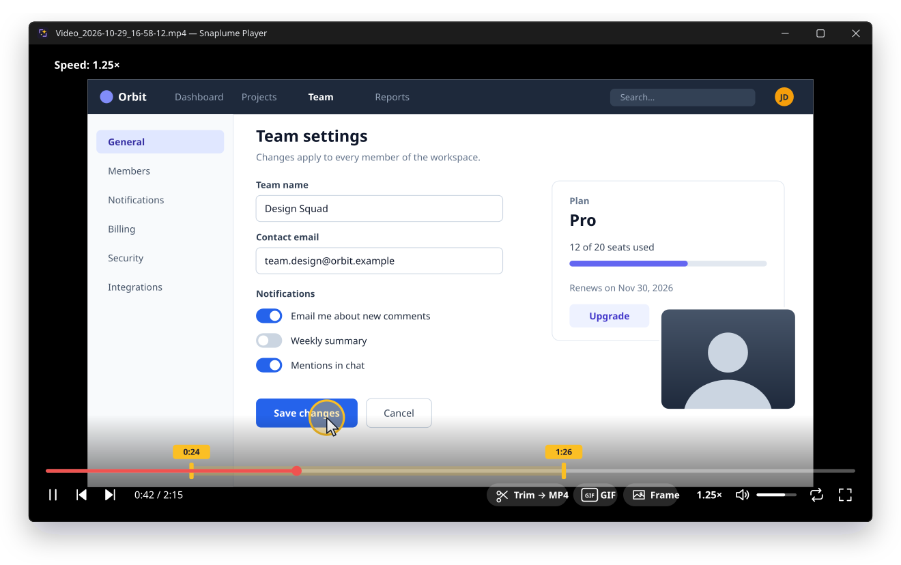
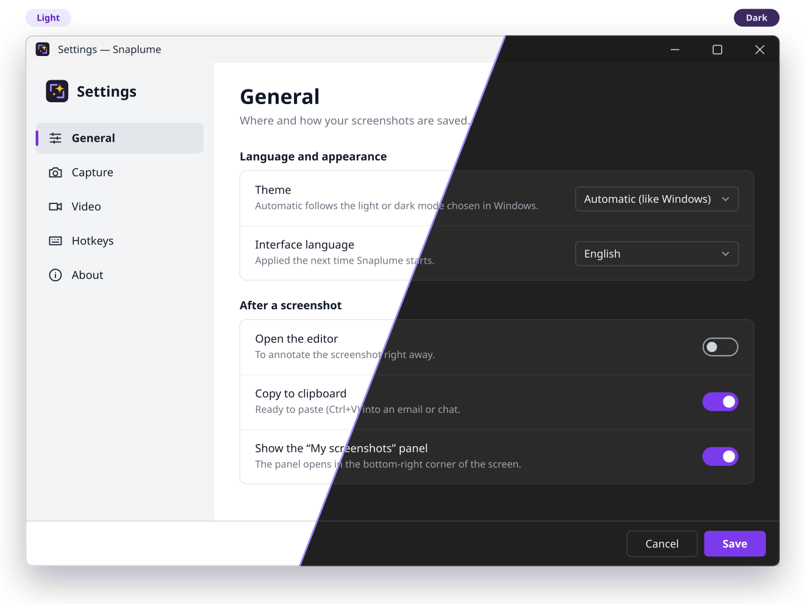

Capture
- Region, window or control detection, with a magnifier
- Full screen, all screens, active window, repeat last area
- Timer for menus and tooltips
- Scrolling capture with automatic stitching
Snaplume is a free, open-source screenshot and screen-recording app for Windows. Smart capture, a full editor, OCR, QR codes, MP4 recording and GIF export. 100% offline: no account, no cloud, no telemetry.

One small app to capture, explain, record and share, without sign-ups or uploads.
Press Print Screen, click a window or drag a region: the capture is saved, named and in your gallery.
Annotations stay editable after saving. Move that arrow or renumber those steps tomorrow.
No account, no cloud, no telemetry, no ads. Your screenshots never leave your PC.
MIT licensed and built in the open with C#, .NET 10 and WPF.
Vector mockups drawn from the real interface.





Everything below works offline, out of the box.
Snaplume never talks to a server. Your screenshots, recordings and settings are plain files on your PC, in folders you choose.
The interface follows the Windows language automatically, or the one you pick.
Windows 10 version 2004 or later, or Windows 11, 64-bit. No .NET installation needed.
Snaplume-Setup-<version>.exe
Classic setup with a Start menu shortcut and an uninstaller. Recommended for most users.
Download the installerSnaplume-<version>-portable.zip
Unzip anywhere (even a USB stick) and run Snaplume.exe. Settings stay in the folder.
Deploying to many PCs? Each release also ships Snaplume-<version>-x64.msi, an all-users MSI package for Intune, Group Policy or msiexec /qn.
Windows SmartScreen warning? The builds are not code-signed yet, so Windows may say it "protected your PC" the first time. Click More info › Run anyway. Each release ships a SHA256SUMS.txt file to verify your download.
Default global hotkeys, all configurable in the settings.
| Action | Shortcut |
|---|---|
| Region, window or element | Print Screen |
| Full screen | Shift + Print Screen |
| Active window | Alt + Print Screen |
| Repeat last region | Ctrl + Print Screen |
| Region with timer | Ctrl + Shift + Print Screen |
| Start / stop a video | Ctrl + Alt + Print Screen |
# Scriptable command line
Snaplume.exe --capture screen --exit
Snaplume.exe --capture region --delay 5 --workspace "Bug reports"
Snaplume.exe --capture scrolling
Snaplume.exe --record screen --duration 30 --exitYes. Snaplume is open source under the MIT license: free for personal and commercial use, with no ads, no trial and no premium tier.
No. There is no account, no cloud, no telemetry and no update check. Text recognition uses the OCR engine built into Windows and QR codes are decoded locally.
The executables are not code-signed yet, so SmartScreen does not recognize them. Click More info › Run anyway. You can compare the file with SHA256SUMS.txt from the release, or build Snaplume yourself from the source code.
A hotkey can belong to only one application, and Snaplume tells you when one is taken. Quit the other tool or pick other shortcuts in Snaplume's settings. On Windows 11, also turn off Settings › Accessibility › Keyboard › Use the Print screen key to open screen capture.
In Pictures\Snaplume by default (you can change it), as regular PNG, JPEG or MP4 files. Each workspace is a sub-folder. Annotations are kept beside them in a hidden .snaplume folder so they stay editable.
A zip you can run from anywhere, including a USB stick, without installing anything. An empty file named portable next to Snaplume.exe keeps the settings in that folder.
Windows 10 version 2004 (May 2020 Update) or later and Windows 11, on 64-bit (x64) PCs.
Report bugs, suggest ideas, translate the interface or send pull requests on GitHub. Each language is a single JSON file.